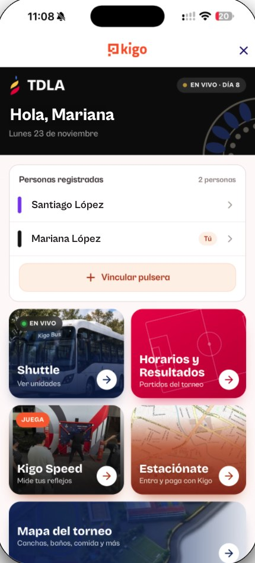
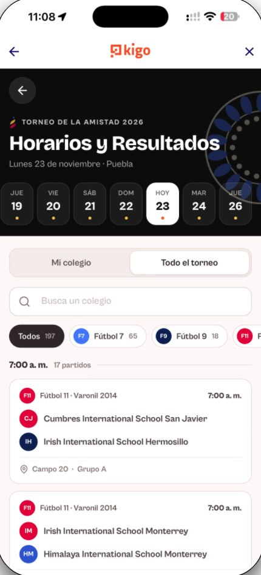
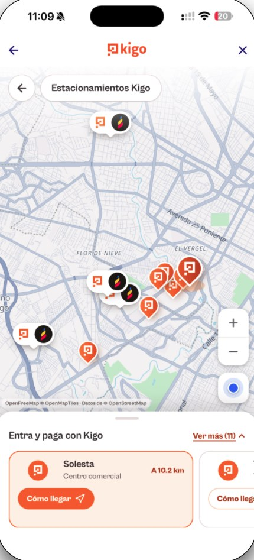
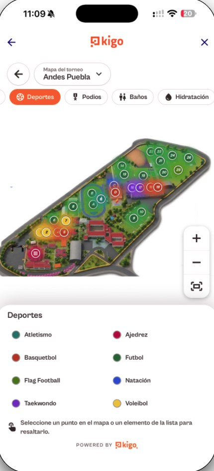
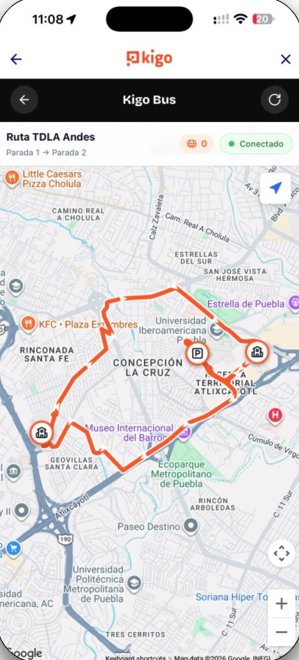

Torneo de la Amistad 2026 · Colegio Andes Puebla
Una mini app en Kigo
576 personas llevaron el torneo en el bolsillo. Esta es su historia.
Contenido
Nueve escenas
Un recorrido por lo que hicieron las personas dentro de la mini app, de la primera entrada a la ruta al estacionamiento.
00Escena · Empezar
Todo empieza con una pulsera
Cada pulsera que cruzó una entrada del torneo quedó registrada.

01Escena · Entrar
Todo empezó con una entrada
El domingo 15, 30 personas abrieron la mini app por primera vez. Cinco días después, el viernes 20, ya eran 273 en un solo día.
02Escena · Volver
Y la mayoría volvió
No fue una visita de una sola vez: 408 de las 572 personas regresaron después de su primera entrada.
¿Cuántas veces entró cada persona?
03Escena · Cuándo
Las mañanas del torneo
El día arrancaba temprano. Entre las 7 y las 12 h entró casi la mitad de las veces.




04Escena · Elegir
¿A dónde fueron?
Las cuatro más abiertas
←→Inicio · usa → para recorrer las secciones
05Escena · Quedarse
Donde más se quedaron
Resultados no solo se abrió más: también fue donde más tiempo se quedaron, casi 8 de cada 10 horas.
Cómo se reparten las 45.6 horas
06Escena · Hacer
Y mucho con qué interactuar
Una vez dentro, buscaron su partido: eligieron deporte, día y colegio, y exploraron las categorías del mapa.
83 % del total
17 % del total
Con lo que más interactuaron
07Escena · Llegar
Del mapa a la ruta
Para llegar a las sedes, 230 personas abrieron el mapa de estacionamientos y 95 salieron directo a una app de mapas.
Personas por paso
225 salidas a una app de mapas
08Escena · Más allá
Y más allá de la mini app
El torneo también se vivió en los estacionamientos de Kigo.
En resumen